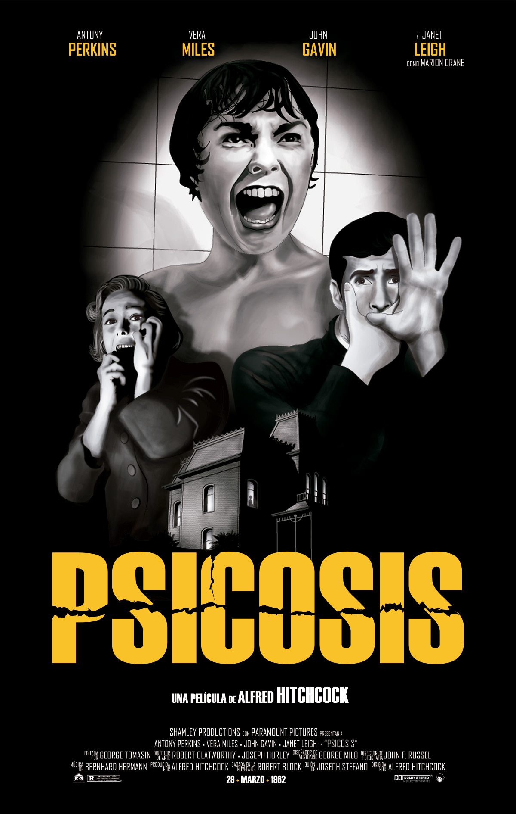
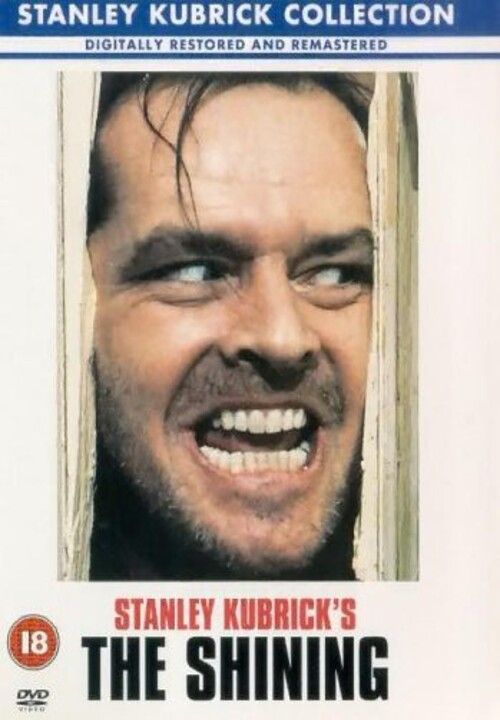
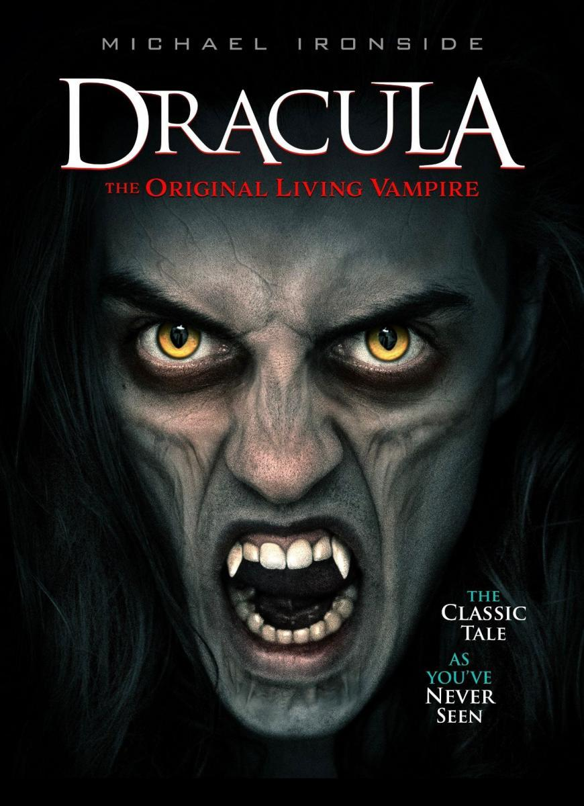

Psicosis
Laburpena
Filmak sekretu batean oinarritzen den misterio handia aurkezten du. Sekretu hori Marion Crane,
hotel batean oheratzeko gelditu den emakume batek, eta haren eguneroko bizitza aldatuko du.
Gertakariak sustatzen ditu bere burmuin arriskutsuak eta suspense psikologikoa sortzen du.
Egileak: Alfred Hitchcock
Iraupena: 1h 49m
Argitaratze-data: 1960

El Resplandor
Laburpena
Jack Torrance idazle bilakatu nahi duen gizon langabetu bat da.
Negualdiko hilabeteetan elur artean izeneko ostatuaren denboraldi
batetarako mantentze lanak burutzeko lanbidea onartu du.
Bere liburua idazteko helburuarekin joan da baina, burua galdu eta bizitza aldatuko du.
Egileak: Stanley Kubrick
Iraupena: 2h 26m
Argitaratze-data: 1980

Drácula
Laburpena
1890. urte, Jonathan Harker abokatua Ingalaterratik Transilvanian dagoen urrutiko gaztelu batera
joan da, han Drakula kondea ezagutuko du, azken honek 1462an bere emaztea galdu zuen,
eta bere maitearen galerak erabat sumindurik Jainkoa ukatu eta izaki madarikatu batean bilakatu zen,
Egileak: Francis Ford Coppola
Iraupena: 2h 35m
Argitaratze-data: 1992

Cisne negro
Laburpena
Nina, New York hiriko ballet konpainia bateko dantzari bikaina da,
bere lanak bizitzako denbora guztia hartzen dio. Amaren presioa, konpainia bereko Lily dantzariarekin
duen lehia
eta Thomas konpainiako zuzendariaren estreinaldi eguna gerturatzen doan areagotuz joango dira.
Egileak: Darren Aronofsky
Iraupena: 1h 50m
Argitaratze-data: 2010